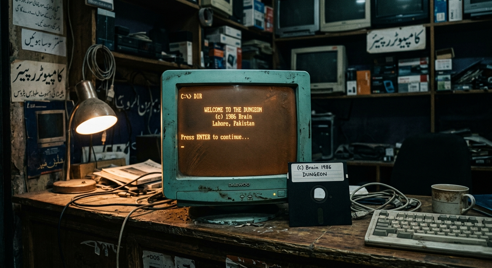
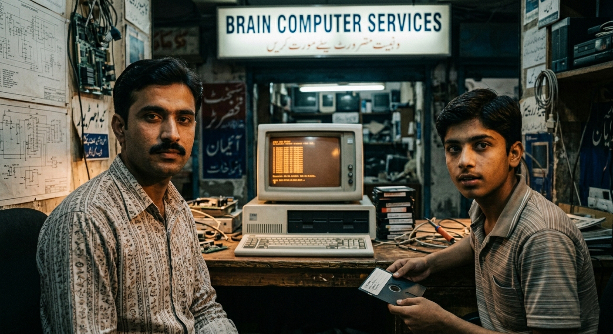
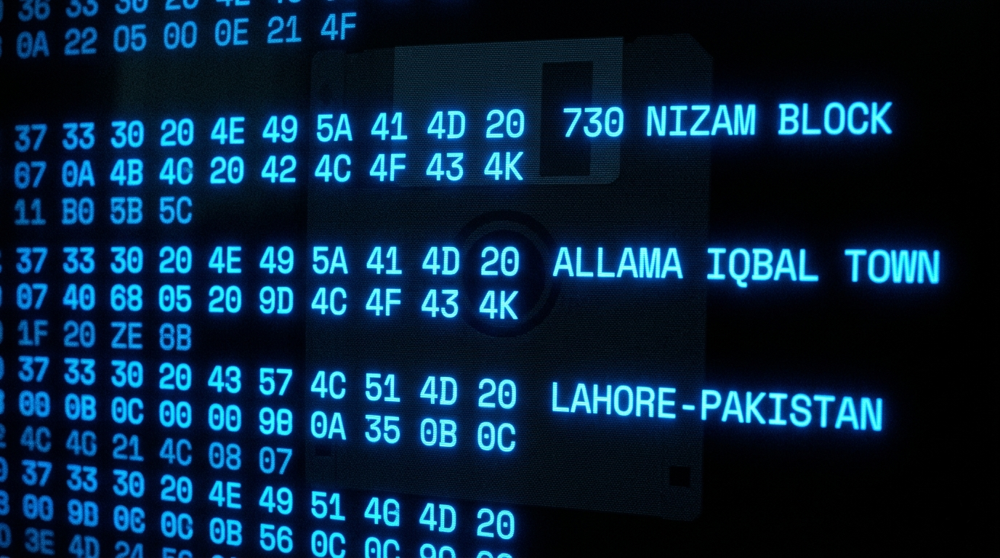
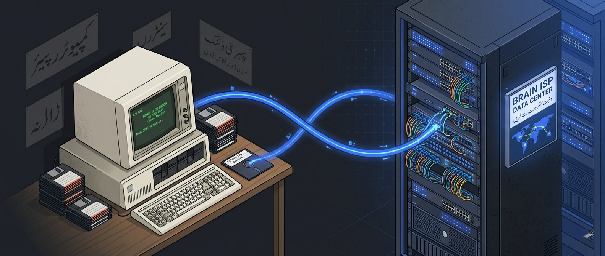
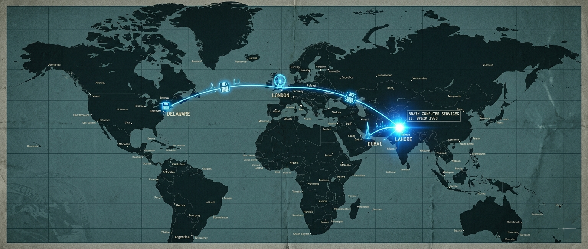

How I Stumbled Onto The Story
I was half-listening to a podcast on a late commute when a throwaway line snapped me awake: "The world's first PC virus was written by two brothers from Lahore — and their phone number was literally inside the code." I had to pull over and play it back twice.
Every pentester I know has opened a hex editor on some boot sector and felt the small jolt of reading raw bytes that were never meant for a human. What I didn't know, until that podcast, was that the very first time anyone ever did that on an IBM PC, they were staring at the names Basit and Amjad Farooq Alvi, a Lahore street address, and three phone numbers that actually rang.
This post is a case study of that virus — Brain, January 1986 — and of the two brothers who wrote it. It is also, honestly, the most oddly hopeful origin story in malware history. The same people who launched the first PC virus went on to launch the country's internet. I'll walk through the technical mechanics, the widely-accepted anti-piracy motivation, the quieter alternative theory that's circulated in security forums for decades, and what modern offensive security still borrows from a 7 KB piece of code written on a 10 MHz machine.
Lahore, 1986 — The Room Where It Happened
Imagine Allama Iqbal Town, Lahore. A small storefront called Brain Computer Services at 730 Nizam Block. Inside: a couple of IBM PC XT clones, a dot-matrix printer, and two brothers in their twenties — Basit was 17, Amjad 24 — writing software for local clinics and doctors. Their main product was a heart-monitoring program. They also did contract work, small database utilities, the usual.

Context for how isolated this was: in 1986, Pakistan had zero public internet. The country would not get its first IP uplink until 1995 (via PERN). Software moved physically — on 5.25-inch floppy disks, shoved into envelopes or carried in coat pockets between Karachi, Dubai, and London. If you wanted to "distribute" something in 1986 Lahore, you copied a floppy and handed it to somebody.
Bandwidth, 1986
A single 5.25" DSDD floppy held 360 KB. Average "transfer rate" between two PCs in Lahore was however fast a person could walk. The Alvis' first dial-up connection — when it finally existed years later — ran at 9.6 kbps over a leased line. For perspective, this sentence you're reading is larger than what their daily international data budget used to be.
Now the problem: their software kept showing up on other people's machines. Clients they had never sold to were calling for support. Shops across the city were selling $1 copies of programs the brothers had written. So they did what every frustrated software author in 1986 did — they thought about copy protection. And then they did something nobody else had done: they wrote a piece of code that fought back.
Anatomy of Brain — How the Code Actually Worked
Before I get to the piracy angle, let's look at the code, because this is where Brain earned its place in every malware textbook. It was a boot sector virus, and for its era, it was cleverly engineered. Here's what happens on a machine that boots from an infected floppy:

Welcome to the Dungeon (c) 1986 Brain & Amjads (pvt) Ltd BRAIN COMPUTER SERVICES 730 NIZAM BLOCK ALLAMA IQBAL TOWN LAHORE-PAKISTAN PHONE :430791,443248,280530 Beware of this VIRUS.... Contact us for vaccination.........
Yes — the authors signed the virus. Real names, real address, three real phone numbers. In 2026 that reads like hubris; in 1986 it was logical. The whole point was that infected users should call them, because Brain wasn't designed to destroy — it was designed to get noticed.
Core Techniques (and why they still matter)
Stealth via INT 13h Hooking
When anything (DOS, a diagnostic tool, an antivirus — once those existed) tried to read the boot sector, Brain intercepted BIOS interrupt 13h and transparently returned the original, clean boot sector it had stashed elsewhere on the disk. The disk looked clean. It wasn't. This is the direct ancestor of every rootkit hooking technique that followed.
Hiding in "Bad" Sectors
Brain copied itself into sectors it marked as bad in the File Allocation Table. DOS would faithfully skip those clusters forever. It's a File System Persistence primitive — modern MITRE ATT&CK would call it T1542 (Pre-OS Boot).
Volume Label Tag: "(c) Brain"
Every infected floppy had its volume label renamed. On one hand, it was a bragging fingerprint. On the other, it meant the authors could identify their own disks from a mile away — which matters, as we'll see, for the piracy theory.
Memory-Resident, Non-Destructive
Brain sat resident in 7 KB of low memory after boot. It didn't delete files, didn't corrupt data, didn't format disks. It just slowed floppy access a bit and waited to infect the next disk inserted. No payload. That restraint is what turned it from a "bomb" into a "message."
From a red-team perspective, the design lessons are all still live: hook the layer below your detection surface, persist where the defender isn't looking, sign your work only when you want attention. The modern bootkits (TDL4, LoJax, BlackLotus) are direct descendants of this 7 KB file.
Why They Wrote It — The Official Story, And The Whisper

The Official Version (Anti-Piracy)
Interviewed on camera by Mikko Hyppönen in F-Secure's 2011 mini-documentary "Brain: Searching for the First PC Virus", the Alvi brothers gave a simple motive: their original heart-monitoring software kept getting pirated — sold out of copy shops in Lahore and shipped abroad. Brain was a copy-protection tool that bit back. If you pirated their disk, Brain came with it. You got a slow, "infected" experience. You saw their phone number. You called them. They told you off.
Amjad's own words in that interview: "We thought it would stay in Lahore." It didn't. Within months, Brain was reported at the University of Delaware, at The Providence Journal-Bulletin, in university labs across the US and UK. The brothers say they started getting international calls from angry strangers, including collect calls from people demanding a vaccine. They eventually changed the phone numbers.
The Quieter Theory
There's a second version that has circulated in security forums for years — one I've heard in conference hallways more than once. It says the brothers were themselves running a brisk export trade in pirated Western software (WordStar, Lotus 1-2-3, dBase) out of the same Lahore shop. Pakistan had no software copyright law until 1992, so this was locally legal. On that reading, Brain wasn't protecting their code from pirates — it was a piracy tracking mechanism: the volume label tag, the signed header, and the counter-logic were essentially a fingerprint so they could see how far their bootlegged disks had travelled.
I want to be honest with you: there is no smoking-gun primary source for this theory. The Alvis have never confirmed it. What is well-documented is that Pakistan in the 1980s was a significant regional hub for gray-market software resale, and that Brain Computer Services was a retailer in that ecosystem. Whether the virus was purely defensive or had a tracking angle is, and probably will remain, an open question. Treat it as folklore unless and until someone digs up the receipts.
Why It Matters Either Way
Whichever version you believe, the lesson is identical: Brain is the moment the software industry learned that copy protection could become weaponized code, and weaponized code could escape containment. Every DRM rootkit since (hello, Sony BMG 2005) is a descendant of this insight.
How Brain Escaped Pakistan — The First "Global" Malware

Brain demonstrated something that nobody had really thought about: in a world of physical floppy distribution, a virus could ride human behaviour across oceans. Tourists buying cheap software in Karachi carried it home. Exchange students traded disks with American roommates. A Providence Journal-Bulletin reporter's machine was one of the first US public sightings in October 1987 — nearly two years after release, but that's how slow the old-world "network" was.
| Timeline | Event | Why It Matters |
|---|---|---|
| Jan 1986 | Brain released from Lahore on 5.25" floppies | First-ever virus for IBM PC compatibles |
| 1986–87 | Silent spread across South Asia, Gulf, Europe | Proof that physical media = global distribution |
| Oct 1987 | Outbreak at University of Delaware | First documented US sighting; press coverage begins |
| 1988 | McAfee founded; Brain is detection signature #1 | Commercial antivirus industry is born around Brain |
| 1992 | Pakistan passes its first copyright law | Context that made Brain's original defence moot |
| 2011 | F-Secure's Hyppönen flies to Lahore, films the brothers | 25 years later, same address, same phone lines |
Mikko Hyppönen's 2011 trip is genuinely worth watching — he walks up to 730 Nizam Block, rings the bell, and the same people open the door. The virus's return address was accurate for more than a quarter of a century.
From Virus Authors to Internet Pioneers
Here is the plot twist that makes this story worth retelling. The Alvi brothers didn't fade out. They kept the same shop, the same address, and in the mid-1990s — as Pakistan's first IP connections arrived through PERN — they pivoted hard into telecommunications. The company they built is called Brain Telecommunication Limited, trading as Brain NET.
Brain NET became one of Pakistan's earliest and largest ISPs. By the 2000s they operated Pakistan's first private satellite gateway, ran WiMAX and DSL rollouts across major cities, and at various points held the title of the country's biggest independent internet provider. The same brothers who wrote code that travelled by floppy in 1986 built the country's first serious commercial bandwidth infrastructure.
Brain NET Founded
1992
Telecom licence, same Lahore address as the 1986 virus.
First Dial-Up Speed
9.6 kbps
Leased international line. Slower than reading this page.
Peak Subscribers
150k+
Made Brain NET one of Pakistan's largest private ISPs.
Why This Arc Is Inspiring
Two kids from Lahore, in a city with no public internet, wrote a boot sector virus that ended up in hex editors from Cambridge to Caltech. Then they took the same engineering instincts and brought a country online. Not many people get to legitimately claim they shaped both the offensive and defensive halves of their nation's cyber history — the Alvis did.
What Modern Offensive Security Still Borrows From Brain
I wrote about Brain because, honestly, the fundamentals haven't aged. When I'm working a red team engagement and I'm thinking about persistence, I am thinking about the same three questions Basit and Amjad answered in 1986:
Persist below the detection layer
Brain hooked INT 13h because that was below DOS's read path. Today I'd reach for a UEFI implant, a WMI subscription, or a signed driver — same idea, newer real estate.
Hide in space the defender assumes is unusable
"Bad sectors" in 1986 → slack space, alternate data streams, NTFS $EA attributes, disk firmware today.
Restraint = reach
Brain didn't destroy data. That's the only reason it had the time and trust to travel. Noisy malware dies in the first SOC ticket. Quiet malware tours the world.
If you only take one thing away: cybersecurity didn't begin with a nation-state or a criminal gang. It began with two brothers in a dusty Lahore shop who got tired of people stealing their code. Everything since — every APT, every CTF machine, every blue-team SOAR playbook — is a footnote to a 7 KB assembly file they wrote in a room above a photocopier.
Closing Note
The best malware stories are rarely about the code. They are about the people writing it and the world they were writing it for. Brain happened because two brothers in pre-internet Pakistan were irritated about copy-shops, because DOS trusted whatever was in the boot sector, and because 360 KB of floppy plastic was how the entire world moved data. Change any one variable and Brain doesn't exist.
Forty years later, we have Secure Boot, EDR, signed kernels — and we also have the Alvis running Brain NET from the same address. I find that symmetry genuinely moving. It is one of the few cases in cybersecurity where the attacker and the architect of the defence turned out to be the same person.
References & Further Reading
Hyppönen, M. (2011). Brain: Searching for the First PC Virus. F-Secure Labs documentary.
On-camera interview with Basit and Amjad Alvi in Lahore — the primary source for the anti-piracy narrative.
youtube.com/watch?v=ysnrqrjgIP4 open_in_newMarkoff, J. (1988). "Top-Secret, and Vulnerable."
The New York Times — early US coverage of the Brain outbreak at the University of Delaware.
nytimes.com — 1988 article open_in_newChen, T. & Robert, J-M. (2004). "The Evolution of Viruses and Worms."
In Statistical Methods in Computer Security, ed. Chen W. — Brain's place in the boot-sector virus lineage.
colostate.edu — Evolution of Viruses open_in_newBrain Telecommunication Ltd — corporate site.
The ISP currently operated by the Alvi brothers. Same Lahore address as the 1986 virus header.
brain.net.pk open_in_newCAIDA & PERN — History of Internet in Pakistan.
Background on how and when Pakistan first connected to the global IP network (1995 via PERN).
pern.edu.pk open_in_newMITRE ATT&CK — T1542: Pre-OS Boot.
Modern adversary taxonomy descendant of Brain's boot-sector persistence technique.
attack.mitre.org/techniques/T1542 open_in_new